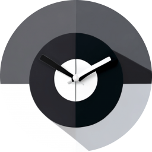
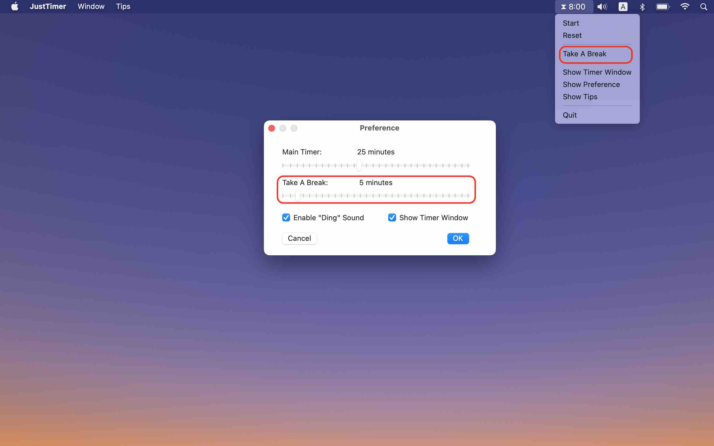

JustTimer
JustTimer
If you have any questions regarding this "JustTimer" app, please email me.
You can use the hourglass on the status bar to control everything, or just use the timer window.
Click the "start" button, or press the "space" key, to start the countdown
Click the "stop" button, or press the "space" key, to pause/stop the countdown
Click the "continue" button, or press the "space" key again, to continue the countdown
Click the "reset" button, or press the "enter" key, to reset the timer
In the menu bar, click JustTimer -> Preference, to customize your countdown timer.
For example, you could turn off the "ding" sound (on timer finishes), by unchecking the "Enable Ding Sound" box.

If you uncheck the "Show Timer Window" box, everything is packed in the tiny hourglass on the status bar on the top of your screen.
Note that all the keyboard shortcuts also apply to the hourglass when the JustTimer app is activate.
To take a break, set the proper break time in the preference window, and then use the "Take A Break" action in the hourglass menu

Some quick tips for keyboard shortcuts. For "Reset", you can also use "backspace" or 'r'. For "Start", you can also use 's'